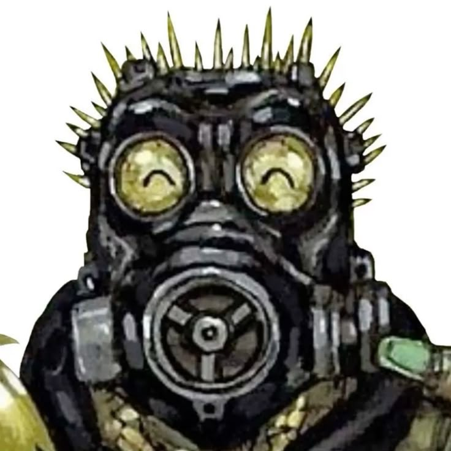

Dorohedoro is a dark fantasy, action-comedy series based on the manga by Q Hayashida, featuring a lizard-headed, amnesiac protagonist named Kaiman. Alongside his friend Nikaido, Kaiman hunts down sorcerers in a gritty, dystopian city known as "the Hole" to find the magic user responsible for his disfigurement and recover his memories.